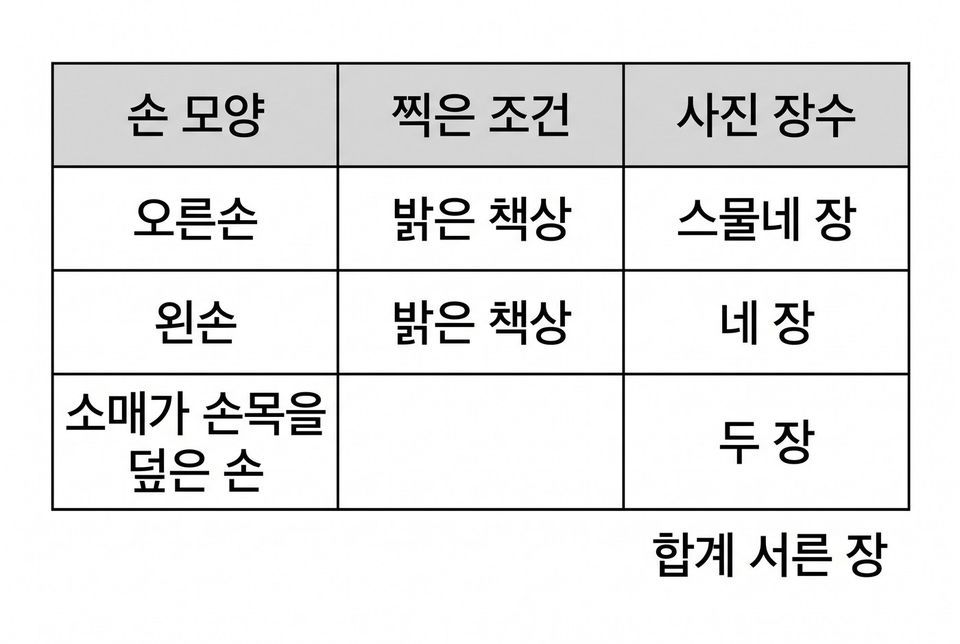
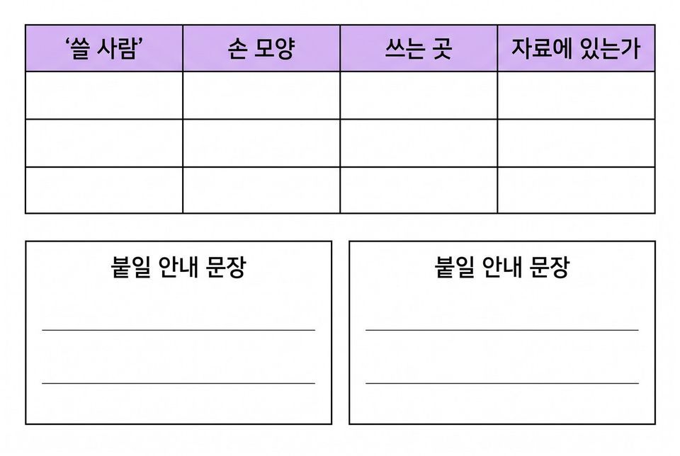
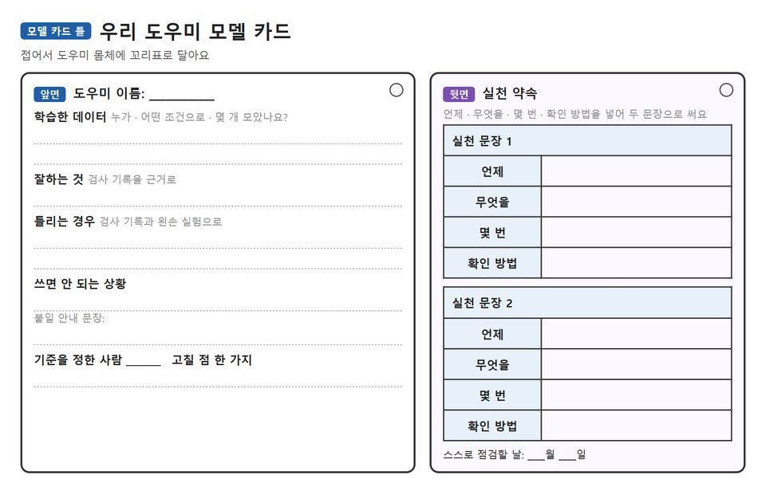

빠진 사용자와 AI의 사회적 영향을 찾아 개인정보와 책임까지 담은 우리 도우미 모델 카드 만들기
학습 문제 — 학습 데이터에 빠진 사람과 AI의 영향을 찾아, 모델 카드에 한계와 안내를 적어 봅시다.
개요
| 성취기준 | [6실인공지능05-02] 인공지능이 사회에 미치는 영향과 학습 데이터의 치우침을 찾고, 토의를 거쳐 공정한 사용 안내를 정한다. 연계 성취기준: [6실05-05], [06자율-7] |
|---|---|
| 핵심 역량 | 지식정보처리 역량, 공동체 역량 |
| 핵심 기능 | ① 인공지능이 만들어지는 과정 탐색하기 ② 기준을 정해 AI를 가르쳐 보고 학습 데이터의 구성 살피기 ③ 자료에 빠진 사용자와 AI가 생활에 주는 영향 찾기 ④ 근거를 들어 판단하고 토론하기 ⑤ 모델 카드에 한계·개인정보·실천 문장 담기 |
| 가치 태도 | 인공지능이 사회에 미치는 영향을 파악하는 자세 인공지능이 알려 준 결과를 근거를 들어 따져 보려는 자세 |
교수학습 활동
31차시 도입 동기 유발 · 학습문제 제시31차시 전개 활동1. AI for Oceans로 내 기준 가르치기 · 활동2. 왼손 실험으로 빠진 자료 찾기 · 활동3.32차시 전개 활동4. 사용자 카드로 세 모퉁이 안전 점검 회의 · 활동5. 우리 도우미 모델 카드 만들기32차시 정리 배운 내용 정리 · 스스로 점검할 날 정하기
31차시도입10분
동기 유발
- 우리 팀 도우미가 친구 손이나 동작을 못 알아봤던 일 떠올리기
- 도우미를 학교 전체가 쓰면 무엇이 달라질지 한마디씩 말하기
- 미션: 전달 전 ‘안전 점검 회의’를 열어 모두가 안심하고 쓸 수 있는지 확인하기

학습문제 제시
- 학습 데이터에 빠진 사람과 AI의 영향을 찾아, 모델 카드에 한계와 안내를 적어 봅시다.
준비물필기구
자료가상 사례 활동지
유의점활동지 배부와 자리 정돈 시간을 도입 시간에 포함한다.
유의점앞 차시 기록이 없는 학급은 활동지의 가상 도우미 사례로 바로 시작한다.
유의점사례에 나오는 학교·도우미·회의는 수업용 가상 설정임을 먼저 밝힌다.
31차시전개30분
활동1. AI for Oceans로 내 기준 가르치기 (10분)
- code.org/oceans를 한국어로 열고 앞 단계는 교사 시범으로 보기
- 뒷부분 단계에서 사람마다 뜻이 다를 수 있는 낱말 하나 고르기
- 내 기준대로 물고기마다 ‘맞다·아니다’를 스무 번 넘게 가르치기
- 학습 뒤 AI가 고른 물고기를 같은 낱말을 고른 짝과 견주기
- 결과가 다른 까닭을 가르친 사람의 기준과 자료로 한 줄 쓰기
활동2. 왼손 실험으로 빠진 자료 찾기 (8분)
- 가상 도우미의 학습 사진 서른 장 가운데 오른손 사진 수(스물네 장) 세기
- 우리 도우미를 왼손으로 써 보고 결과 적기(손목 코치는 왼손목에 차기)
- 자료에 누구와 어떤 상황이 빠졌는지 두 가지 적기

활동3. 영향 카드 가르기 (12분)
- 영향 카드 여덟 장 읽기: 일자리·생활 변화·책임·개인정보
- 예: “가게에 무인 계산대가 늘면 일하던 사람은?”
- 예: “도우미가 틀리게 안내해 다치면 누가 책임지나?”
- 예: “학습에 쓴 친구 손 사진과 목소리는 언제 지우나?”
- 카드를 ‘좋아지는 점·걱정되는 점·더 알아볼 점’ 판에 놓기
- 네 영역 가운데 두 가지를 골라 우리 도우미에 생길 일 한 줄씩 쓰기
준비물필기구, 학생 기기, 27~30차시 우리 팀 도우미, 영향 카드 8장과 가르기 판(모둠별)
자료가상 사례 활동지
유의점AI for Oceans 단계와 낱말은 수업 전에 확인한다.
유의점결과에는 정답이 없으며 기준이 다르면 결과가 달라짐을 짚는다.
유의점앞 차시 작품이 작동하지 않는 학생은 교사 기기의 예시 모델로 왼손 실험을 한다.
유의점영향 카드는 한쪽 답을 정해 두지 않고, 책임은 만든 사람·쓰는 사람·확인하는 어른으로 나누어 생각하게 한다.
32차시전개32분
활동4. 사용자 카드로 세 모퉁이 안전 점검 회의 (14분)
- 사용자 카드 세 장을 뽑아 그 사람의 손·동작·쓰는 곳이 학습 데이터에 있는지 보기
- 자료에 없던 사용자와 상황을 한 줄로 적기
- ‘그대로 전달·고쳐서 전달·전달 미루기’ 가운데 하나를 골라 모퉁이로 가기
- 누가 불편을 겪는지와 학습 데이터의 어떤 점 때문인지 넣어 근거 말하기
- 생각이 바뀌면 자리를 옮기고 까닭을 한 줄로 쓰기

활동5. 우리 도우미 모델 카드 만들기 (18분)
- 학습한 데이터: 누가 어떤 조건으로 몇 개 모았는지 쓰기
- 개인정보: 얼굴·목소리가 들어갔는지, 동의와 지우는 날 쓰기
- 잘하는 것과 틀리는 경우를 시험 기록과 왼손 실험 결과로 쓰기
- 쓰면 안 되는 상황과 쓰기 전에 알릴 안내 문장 두 개 쓰기
- 틀렸을 때 누가 확인하고 책임지는지 한 줄 쓰기
- 뒷면에 언제·무엇을·몇 번·확인 방법을 넣은 실천 문장 두 개 쓰기
- 모델 카드를 접어 도우미 몸체나 기기 옆에 꼬리표로 달기

준비물필기구, 색연필, 사용자 카드(모둠별 1세트), 모퉁이 표지 3장, 꼬리표 끈
자료사용자 점검표, 토론 기록표, 실천 문장 활동지, 모델 카드 틀, 27~30차시 기록표
유의점어느 쪽을 골랐는지가 아니라 근거의 내용을 보며, 모둠 결론을 하나로 모으게 하지 않는다.
유의점모델 카드는 모둠이 함께 채우되 실천 문장은 각자 쓰며, 구호는 실천 문장으로 인정하지 않는다.
유의점산출물 기록이 없는 학생은 가상 도우미의 사진 구성표로 같은 모델 카드를 쓴다.
유의점느린 학습자는 실천 문장 틀을 쓰고, 빠른 학습자는 안내 한 줄을 엔트리 [말하기]나 마이크로비트 글자로 넣는다.
32차시정리8분
배운 내용 정리 (6분)
- 모델 카드를 단 도우미를 늘어놓고 갤러리 걷기로 돌아보기
- 닮고 싶은 안내 문장이나 개인정보 약속에 별 스티커 붙이기
- 한쪽 손이나 한 사람 기준에만 맞춰질 때 생기는 불편을 자료와 이어 쓰기
- 내가 정한 실천 문장 하나를 소리 내어 말하기
스스로 점검할 날 정하기 (2분)
- 실천 문장을 확인할 날짜를 각자 자기 달력에 적어 두기
- 약속한 날 도우미 학습 데이터를 지우는 차례 확인하기
준비물별 스티커
자료실천 문장 활동지
유의점쓰기를 어려워하는 학생은 구술로 확인하고 지원한 사실을 적는다.
유의점점검 날짜는 학생이 스스로 정하게 하고 교사가 정해 주지 않는다.
유의점학습에 쓴 사진·녹화는 약속한 날에 교사가 확인하며 함께 지운다.
유의점모둠 기록이나 별 스티커 수로 개인 성취를 대신 판단하지 않는다.
평가 계획
인공지능 소양 · 학습 데이터의 치우침과 사회적 영향의 확인
학습 데이터에 빠진 사람과 상황, AI가 생활에 주는 영향을 근거를 들어 찾고, 모델 카드에 한계·개인정보 보호·사용 안내와 점검할 수 있는 실천 문장을 정할 수 있는가?
| 수준 | 평가 기준 |
|---|---|
| 매우 잘함 | AI for Oceans에서 짝과 결과가 달라진 까닭을 가르친 사람의 기준과 자료로 설명하고, 치우친 까닭을 자료 구성의 숫자와 왼손 실험 결과를 들어 설명한다. 영향 카드에서 두 영역 이상을 골라 우리 도우미에 생길 일을 구체적으로 쓰고, 불편을 겪는 사람과 자료 구성을 담은 근거로 판단한다. 모델 카드에 틀리는 경우·쓰면 안 되는 상황·안내·개인정보(동의와 지우는 날)·책임을 쓰고, 점검 방법과 날짜가 있는 실천 문장 두 개를 쓴다. |
| 잘함 | 기준에 따라 결과가 달라짐을 말하고 잘 알아보지 못한 사례를 학습 데이터와 이어 설명한다. 영향 카드에서 두 영역을 골라 한 줄씩 쓰고, 모델 카드에 빠진 사용자와 안내 문장, 개인정보 항목을 쓰며 점검 방법이 있는 실천 문장 두 개를 쓴다. |
| 보통 | 치우친 까닭은 말하나 근거가 한 가지에 머물거나 자료 구성과 이어지지 않는다. 또는 영향을 한 영역만 쓰거나, 모델 카드의 개인정보·책임 칸이 비어 있거나, 실천 문장에 점검 방법이나 점검할 날이 빠져 있다. |
| 노력요함 | 교사가 사례 지문과 자료 구성표, 영향 카드를 함께 짚어 준 뒤에도 잘 알아보지 못한 까닭을 자료와 이어 설명하거나, 빠진 사용자와 영향을 찾아 모델 카드에 쓰는 데 어려움이 있다. |
| 미관찰 | 결석이나 미제출로 확인하지 못한 경우. 낮은 성취로 적지 않고 따로 기록한 뒤 보충 확인 시점을 정한다. |
평가 방법 활동지 분석 · 산출물(모델 카드) 확인 · 구술 확인 · 관찰
연동 도구·링크
과정안에 나오는 도구가 저절로 걸립니다. 수업 전에 학교망에서 열리는지, 블록·메뉴 이름이 바뀌지 않았는지 확인하세요.
마이크로비트 V2 ↗LED·버튼·가속도·소리 센서, 무선 통신계정: 필요 없음엔트리 ↗블록 코딩, 인공지능 블록, 데이터 분석(테이블·차트)계정: 학생 계정 없이 만들기 화면 사용 가능(저장은 교사 계정)엔트리 사용 설명서 ↗엔트리 안내Code.org AI for Oceans ↗학습 데이터로 기준 가르치기, 치우침 보기계정: 필요 없음
내 수업 링크
학급 패들렛, 엔트리 작품, 활동지 주소처럼 이 차시에 쓸 링크를 걸어 둡니다. 이 브라우저에만 저장되고 밖으로 보내지 않습니다. 학생 이름이 든 주소는 넣지 마세요.